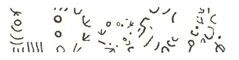
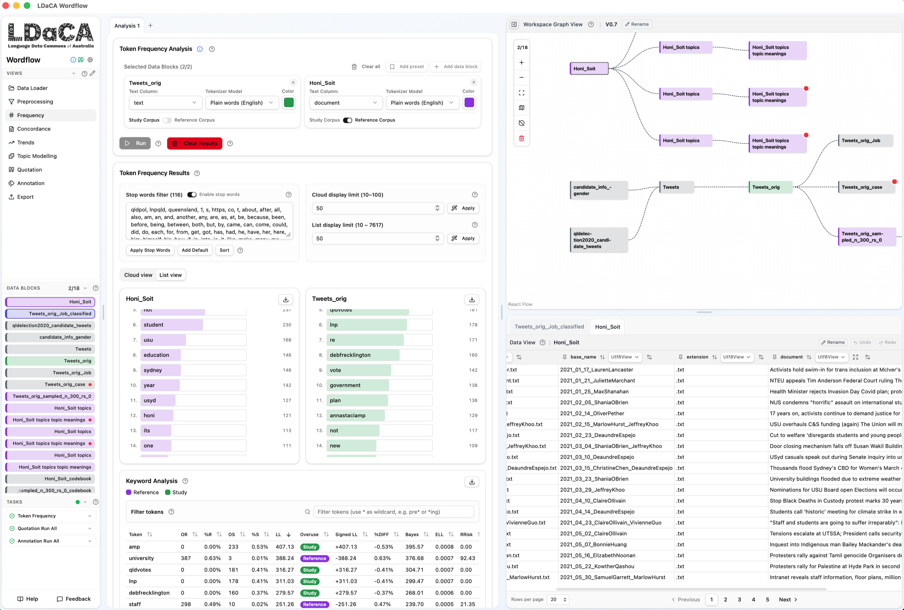
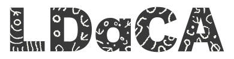

RAPID-CDL · Parliament workshops · Session 2 of 2
Analysing parliamentary discourse at scale with Wordflow
What becomes possible once thousands of debates are searchable and structured
Dr Chao Sun · Sydney Informatics Hub, The University of Sydney
Wednesday 30 September 2026 · 11:00 am-12:30 pm · Western Tower Boardroom, The Quadrangle

Before we start
Toilets
Out of the door, turn left and follow the corridor to the end. The male and all-gender accessible toilets are opposite the MacLaurin Hall kitchen; the female toilet is just around the corner to the right, by the stairs.
Emergency numbers
000 for police, fire or ambulance
02 9351 3333 for campus security (Protective Services), 24/7, or the SafeZone app
If the alarm sounds
- Leave calmly by the nearest exit, following the green exit signs.
- Take the stairs, not the lift.
- Follow the wardens' instructions to the assembly area shown on the evacuation diagram by the door.
- Don't go back in until you're told it's safe.
Would you need help to evacuate? Please let us know now, quietly.
How today works
- A guided tour, not a strict hands-on. I'll show what Wordflow can do with Hansard; follow along on your laptop, try your own ideas, or just watch.
- No steps to keep up with. Nothing breaks if you go your own way.
- Ask any time. Questions, "can it do X?", and ideas from your own research are the best part of a small room.
- The goal: leave knowing what's possible, so you can explore the debates yourself afterwards. The detailed walk-throughs are on video (last slide).
Not set up yet? sih.tools/wordflow: desktop app (recommended) or Launch in Binder in your browser.
Who built Wordflow?
Sydney Informatics Hub
Sydney Informatics Hub
Sydney Corpus Lab
All at the University of Sydney, a partner institution of the Language Data Commons of Australia (LDaCA) (DOI: 10.3565/kq2v-9g52), a co-investment partnership with the Australian Research Data Commons (ARDC) through the HASS and Indigenous Research Data Commons. The ARDC is enabled by the Australian Government's National Collaborative Research Infrastructure Strategy (NCRIS).
Why Wordflow?
Modern text analysis (corpus methods, NLP, and now GenAI) mostly lives in Python and R. Learning and maintaining that is real effort on top of a busy research schedule.
Wordflow puts those methods behind point-and-click tools: your data stays visible, and every step can be inspected and retraced.
Text data flows through stackable, single-purpose tools: the meaning of an analysis comes from how you shape your data, not from the tool itself.
The interface at a glance

- Tool sidebar (Views): pick a tool
- Tool interface: the selected tool's controls and results, in browser-style tabs
- Project Graph: your data and every block derived from it
- Data Editor: inspect a block's rows and columns, and clean text in place
- Data Blocks: switch the active block quickly
- Tasks: progress of longer-running analyses
- Help & Feedback: built-in documentation; a direct line to the team
One idea to hold onto
The data block is what flows between the tools.
- Your imported dataset is a data block. A filter, a join, an analysis result: each becomes a new block, ready for any tool to read.
- Every tool is a lens. Click Add to Project and its results feed the next tool.
- The graph is your method: every step visible, every derivation traceable.
Today's data: two slices of Hansard
From Sam's RAPID-CDL database, now in Wordflow's Import sample data list:
GST
Every paragraph mentioning GST or the goods and services tax, 1998-2026: 40,860 paragraphs, about 4.1 million words. Mentions peak around its introduction on 1 July 2000.
Housing
Paragraphs about housing, homelessness, first home buyers, mortgages, negative gearing, renting: 76,312 paragraphs, about 8.5 million words. The most recent years are the busiest.
Each comes with sitting date, chamber and debate title, a version with the paragraph before and after each one, and a speaker table to join (name, gender, party).
Hames, S., & Alpert, E. (2026). Proceedings of Australian Federal Parliament: An Analytical Database (Version 2026-09-21). Zenodo. doi.org/10.5281/zenodo.22868754 · CC BY-NC-ND 4.0
Some things to try
Over time
- Trends: how often "GST" or "negative gearing" comes up, year by year
- Split by chamber, or by party after joining the speaker table
Who says what
- Frequency: compare the words of two parties, or House vs Senate
- Right-click a word to drop it as a stop word; click it to see it in context
Close reading
- Concordance: every use of "first home buyers" or "housing affordability", in context
- Open the full paragraph, and the ones around it
Themes
- Topic Modelling: what the housing debates are about, and how that shifts across parliaments
Shaping
- Data Builder: filter to a decade, a debate or a speaker; join the speaker details
- Data Editor: clean text, count words, split or combine columns
Coding
- Annotation: classify paragraphs yourself or with a GenAI model, and measure agreement
Big blocks: Sample or Filter in the Data Builder first to keep things quick, especially before Topic Modelling.
Reshape the data,
and the same tool tells a new story.
Every tool is a lens. The interesting question is which lens, on which slice, for what purpose, and that's by your design.
Keep going
Get Wordflow
sih.tools/wordflow: downloads for Mac and Windows, the browser option, and the documentation.
In the app: Help for the built-in docs, Feedback to tell us what you think.
Watch the full workshop (3 hours)
Wordflow from zero, every tool step by step (90 min): youtu.be/ExYVSgvYIes
Coding text with GenAI, the Annotation tool (90 min): youtu.be/KcjJViYRYX4
Recorded in August on an earlier v0.7 release. The design is the same, but a few names have changed: Preprocessing is now Data Builder, and the Data View is now the Data Editor, with new text-cleaning tools.
The Hansard data
Full database: doi.org/10.5281/zenodo.22868754 (RAPID-CDL, Hames & Alpert 2026)
More from RAPID-CDL: rapid-cdl.edu.au
Cite Wordflow & get in touch
Cite: doi.org/10.5281/zenodo.20408328 (always the latest release)
Questions, or want Wordflow for your team? chao.sun@sydney.edu.au
